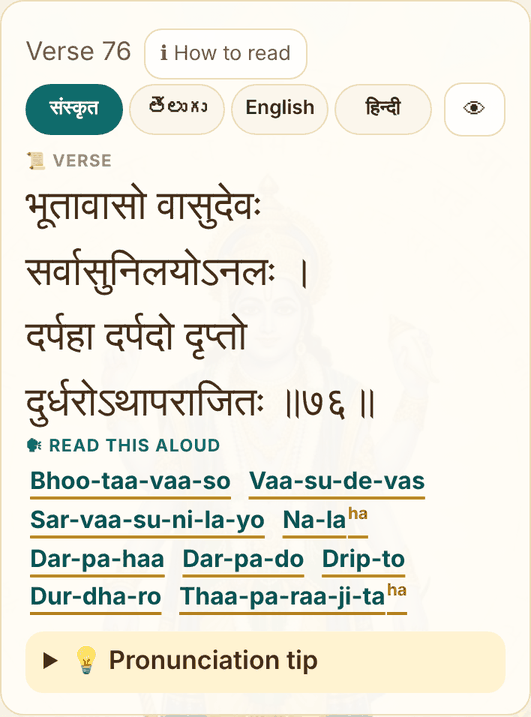
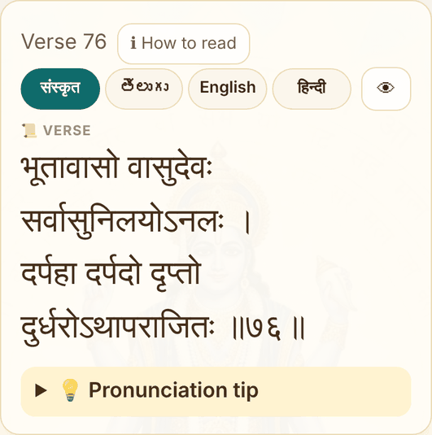
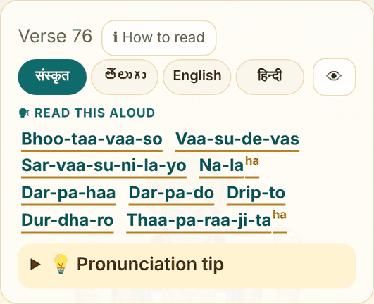
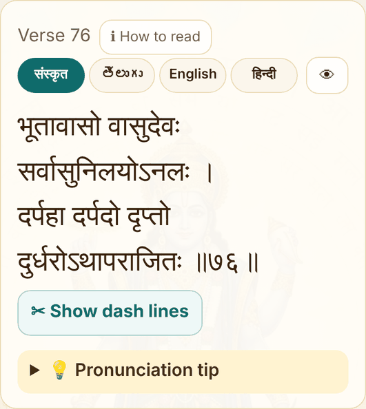

Not in the app yet. Verse 76 as it would look while practising and revising.
You › Language & display, under the dash-lines language.
For learning a new verse.

Cleaner, for people who read the script well.

For children or English readers who can't read the script yet.

With Script only, a small button under the verse shows the dash lines for this verse only. The setting doesn't change. (The 👁 button at the top stays as it is: it hides the text to test yourself.)
